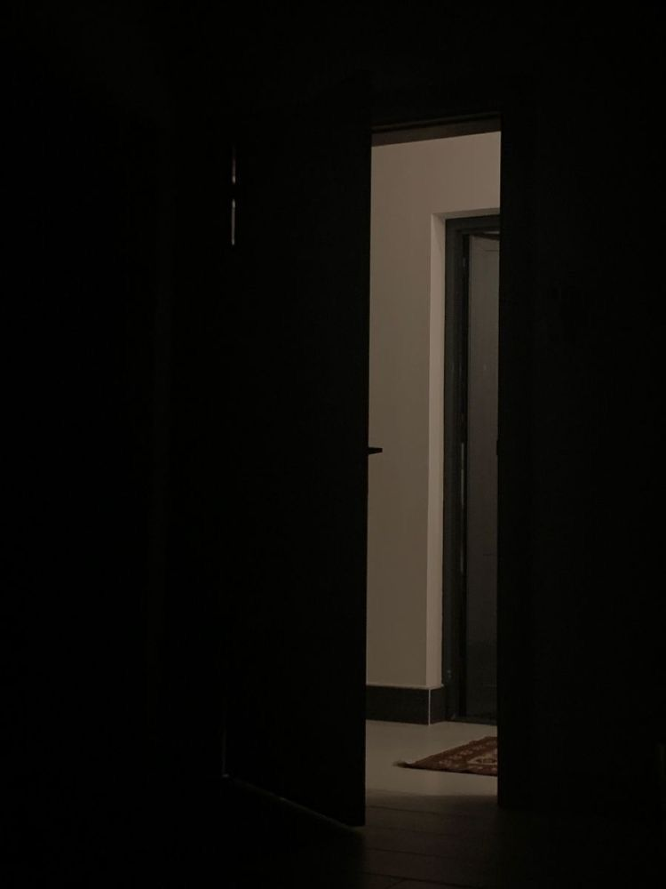
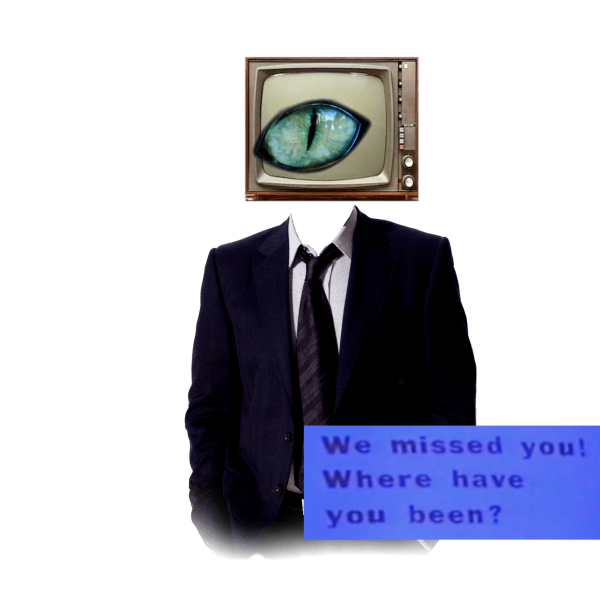
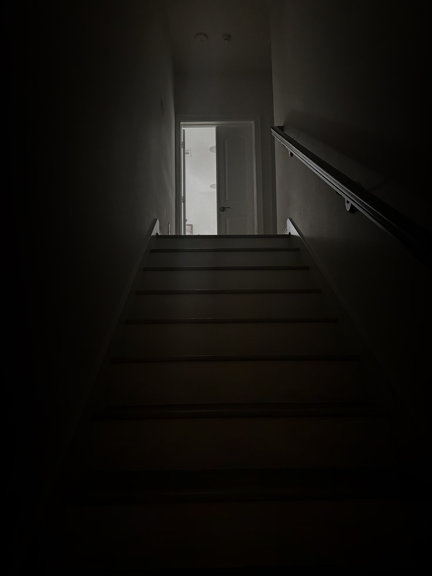
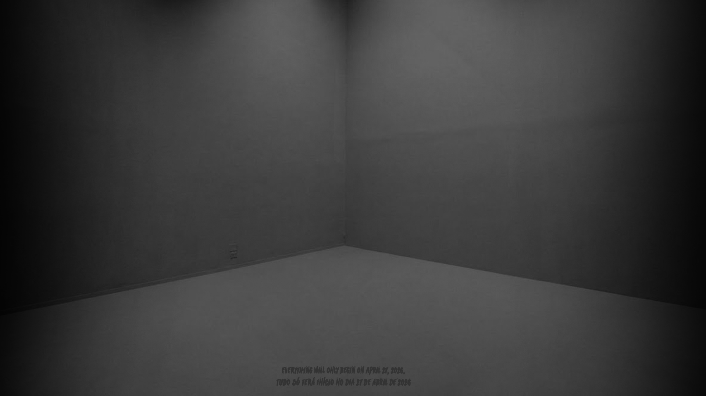
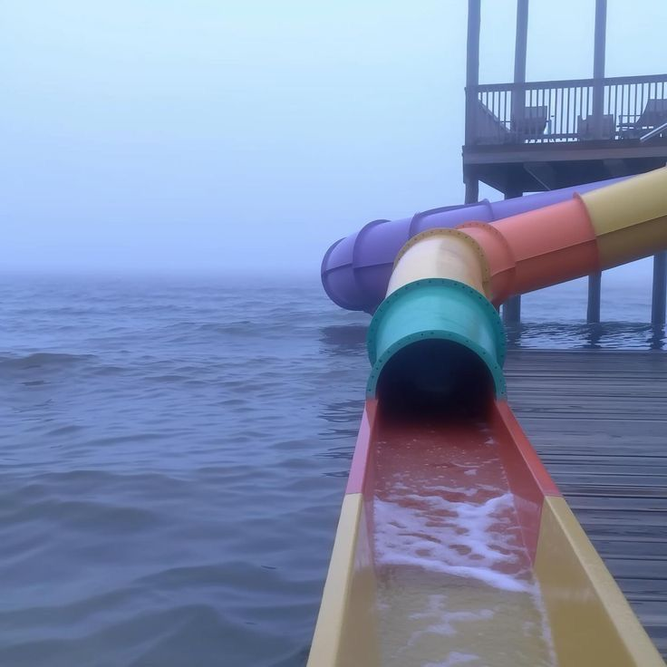

Waiting for Friday






Text preserved, translate into your language.

Esta foto é exatamente como eu me lembrava. Estranho que, todas as vezes que eu ia para parques aquáticos quando era criança, o tempo estava fechado e o céu extremamente nublado; ficava assim por pelo menos duas horas.
Existia um tobogã no meio de uma piscina rasa. Lembro-me de como era confortável e, ao mesmo tempo, estranho olhar para o céu e ver tudo cinza — completamente cinza. Às vezes caía uma chuva leve e eu tremia de frio ao sair da água. Algumas vezes, ao sair desse pequeno tobogã, não via ninguém à minha volta. Subia as escadas e, ao descer novamente, todas as pessoas pareciam voltar.
Tive um sonho que se repetiu por algumas noites: eu estava sozinho, brincando em uma piscina rasa e infinita. Era de dia e o céu estava completamente cinza. A água estava um pouco gelada; eu sentia um frio na barriga estranho — felicidade, ansiedade e medo, tudo ao mesmo tempo.